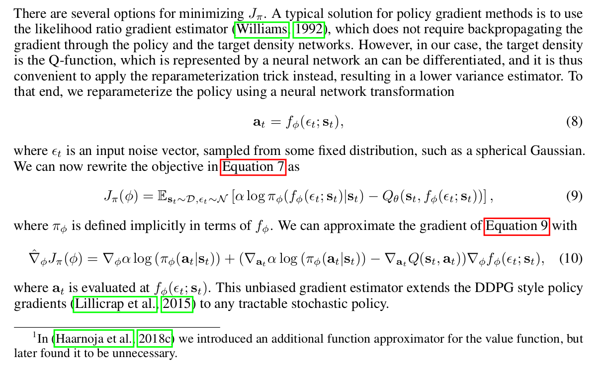

Soft Actor-Critic
准确来讲，这里要分析的是两篇发表时间不同但内容高度相关的文章，一篇是Soft Actor-Critic的开山之作Soft Actor-Critic: Off-Policy Maximum Entropy Deep Reinforcement Learning with a Stochastic Actor，另一篇是标题中的Soft Actor-Critic Algorithms and Applications，都来自于UCB大佬Pieter Abbeel和Sergey Levine实验室。
SAC系列工作发表之后在RL社区内广受好评，主要原因在于
- 这套算法的稳定性非常好，可以在不同的random seed下达到相当的效果，且比较好调参，这一点足以拯救很多RL研究者们日益稀少的发量
- 之前同样可以在各种不同的任务环境下达到比较稳定效果的算法是PPO，根据SAC论文的实验效果来看，SAC在高维连续state space连续action space的控制任务上可以达到比PPO好很多的效果
- SAC可以off-policy训练，这意味这SAC拥有比原始PPO低很多的样本复杂度
- 相比于DDPG为代表的actor-critic算法，SAC在exploitation-exploration balance上做的更好
Related Works
在我目前看过的文章中，Soft Actor-Critic这篇的related works一节绝对称得上是最良心之一，篇幅占了整整一页，条理清晰，稍微扩展下可以出一篇review了
作者称他们的算法包含了三部分
- An actor-critic framework: 传统policy iteration优化一般分两步，分别是policy evaluation和policy improvement，二者互相在对方的最优点处迭代，最终收敛至全局最优；然而“必须要在对方的最优点迭代”的做法使得这种思路在大型MDP应用中效率很低，actor-critic架构的思路起源于希望这两步优化共同进行
- An off-policy formulation: On-policy一般比off-policy稳定，但样本利用率要低很多，之后一个典型的off-policy尝试是DDPG，根据作者的说法
The interplay between the deterministic actor network and the Q-function typically makes DDPG extremely difficult to stablize and brittle to hyper-parameter tuning.
- Entropy maximization term to enable stability and better exploration： 在此之前inverse RL和optimal control领域就已经有很多人利用policy的entropy搞事情了，包括Maximum a Posteriori Policy Optimization (MPO)和Levine Sergey的成名作Guided Policy Search (GPS)；此外Schuman大佬还在2017年的一篇文章中指出了Soft Q-learning与policy gradient的等价性
Theory
传统的RL任务的目标是在MDP上优化一个policy使得total discounted reward最大，而SAC的核心思想在于在优化的最终目标上加了一个policy的entropy项
其中$\alpha$是temperature parameter，可以定为constant，也可以在训练中学习，理论部分的证明中$\alpha$被设定为constant
Policy evaluation
作者在Lemma 1中证明了以下Bellman backup operator是一个contraction mapping，且$Q$最终会收敛到optimal soft Q-function for policy $\pi$
证明过程用到一个assumption：action space是离散的，作者称这位为了保证entropy augmented reward有bound；实际上应该大多数连续action space任务上这个reward也是有界的，这个不影响算法实现
Policy improvement
因为soft Q-learning起源于PGM，这里做policy improvement理所当然地用到了Bolzmann policy distribution
在Lemma 2中，作者进一步证明了由上式构成的policy improvement满足
加上上面那个bounded augmented reward条件，单调有界两个条件凑齐了，可以立刻得到结论这一套policy iteration全局收敛
Practice
由于计算复杂度太高，上面推的那一堆虽然很漂亮，但无法用于实际任务中（就说实际任务中不可能用PGM那一套带partition function的Bolzmann policy吧。。。

更新Q-function时，文章也用到了DDPG的exponential moving average技巧，policy evaluation的目标函数只是把DQN的目标函数里面加上entropy，不表
Policy improvement最终的结果虽然看起来很简单，但中间的推导过程还是值得仔细琢磨下

划重点
- 还是第一次在论文里见到说reparameterization trick可以得到lower variance estimator的，然而作者在这里没有给参考文献。。。
It is thus convenient to apply the reparameterization trick instead, resulting in a lower variance estimator.
- 看形式感觉是DDPG加了reparameterization trick和entropy regularizer，作者的说法是
The unbiased gradient estimator extends the DDPG style policy gradients to any tractable stochastic policy
- 在之前的工作中作者还加了一个value function approximator，后来发现这玩意并不需要，于是去掉了